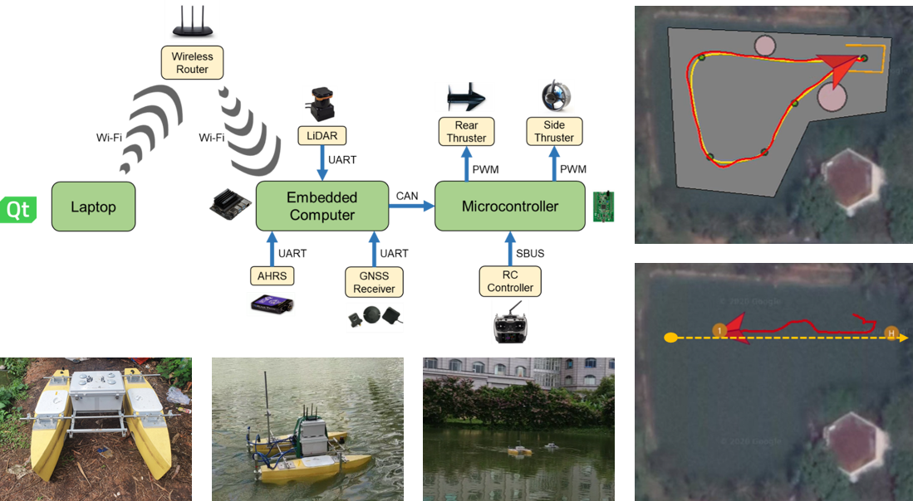

吀嘲
 碎羅技師電固興趣貝𠊛𣛠、處理信號、理說調遣吧系統𣴛。碎完成文憑技師（才能）吧碩士（硏究）𧗱『技術調遣吧自動化』在科電－電子、場大學百科, 大學國家城庯胡志明。碎曾𪵯助理研究在VIAM Lab𠁪現實化可能自行朱𡗉類方便空𠊛梩。Giờ đây, trong vai trò 技師 phần mềm 在 VinAI, 碎 hướng tới
thiết kế 吧 cải tiến 𡗉 phần mềm thông minh 朱 các 方便 chạy bằng 電.
碎羅技師電固興趣貝𠊛𣛠、處理信號、理說調遣吧系統𣴛。碎完成文憑技師（才能）吧碩士（硏究）𧗱『技術調遣吧自動化』在科電－電子、場大學百科, 大學國家城庯胡志明。碎曾𪵯助理研究在VIAM Lab𠁪現實化可能自行朱𡗉類方便空𠊛梩。Giờ đây, trong vai trò 技師 phần mềm 在 VinAI, 碎 hướng tới
thiết kế 吧 cải tiến 𡗉 phần mềm thông minh 朱 các 方便 chạy bằng 電.
Trên trang này 固 thể tìm thấy xuất bản khoa học của 碎 cùng video đính kèm.
Đường dẫn:
 GitHub -
GitHub -
 Google Scholar -
LinkedIn
Google Scholar -
LinkedIn
Liên hệ: qha258@gmail.com
點扨預案
SLAM trực tiếp dựa trên kết hợp camera-LiDAR trong môi trường ngoài trời
Video này phô diễn hiệu năng của một hệ SLAM trực tiếp, kết hợp thị giác-laser, trong đa dạng các môi trường ngoài trời.
Trong hệ thống 固 đề xuất giải thuật xếp chồng ảnh cải tiến, giải thuật xếp chồng đám mây nhanh 吧 giải thuật tối ưu cửa sổ dựa trên đồ thị nhân tố.
Kết hợp 貝 cấu trúc dữ liệu ikd-Tree để quản lí bản đồ, hệ thống của ta đã chứng minh chạy mượt trong 𡗉 trường hợp khắc nghiệt.
Công trình này 羅 một phần luận văn thạc sĩ của 碎 在 ĐHBK, ĐHQG-HCM vào năm 2022.
Mô phỏng bám đường LOS 吧 né vật cản SBG 朱 USV
Video này phô diễn cách USV bám đường định sẵn theo vài phương pháp tham số hóa: thẳng hay bspline.
Bộ dẫn đường của 方便 vì tuân thủ luật LOS nên xuất góc đảo lái tham chiếu để bộ 調遣 góc đảo lái theo mô hình R bám.
Để né vật cản, SBG được áp dụng, ra quyết định dựa trên phép đo từ LiDAR 2D.
Công trình này 羅 một phần hợp tác sắp tới giữa 碎吧 VIAM Lab 在 ĐHBK, ĐHQG-HCM nhằm hiện thực hóa khả năng tự hành khi quan trắc môi trường 朱 tàu nổi.
SLAM 朱 LiDAR 2D trong môi trường ngoài trời
Video này phô diễn hiệu năng của một hệ SLAM 朱 LiDAR 2D trong cả môi trường nhân tạo 吧 thực tế.
Thông qua tận dụng 技術 đánh trọng số bền vững, tối ưu cửa sổ trượt, đối sánh quét nhanh 吧 tính toán song song,
hệ thống đề xuất không những vận hành ổn định trong 𡗉 khu vực hỗn tạp mà còn đáp ứng ràng buộc thời gian thực.
Công trình này 羅 một phần luận văn 技師 của 碎在 ĐHBK, ĐHQG-HCM vào năm 2020.
Dẫn đường 吧調遣朱 AGV giao hàng
Video này phô diễn cách một AGV giao hàng nhận lệnh từ GUI giám sát 吧 tự động lăn bánh tới đích đến mong muốn.
Nhằm phục hồi vị trí 吧 góc hướng, 方便 phụ thuộc vào một bộ thu RTK-GPS 吧 một bộ AHRS.
Tính năng tự lái sau đó được hiện thực hóa bằng bộ bám đường LOS 吧 bộ 調遣 PID góc đảo lái.
Công trình này 羅 một phần dự án của 碎 trong chương trình Sinh viên 硏究 Khoa học 2019, tài trợ bởi ĐĐT, ĐHBK, ĐHQG-HCM.
出版科學
 IMU-Assisted Direct Visual-Laser Odometry in Challenging Outdoor Environments
(Q.-H. Pham, N.-H. Tran and T.-D. Nguyen),
in International Conference on Green Technology and Sustainable Development, Springer, 2023, pp. 497-508.
IMU-Assisted Direct Visual-Laser Odometry in Challenging Outdoor Environments
(Q.-H. Pham, N.-H. Tran and T.-D. Nguyen),
in International Conference on Green Technology and Sustainable Development, Springer, 2023, pp. 497-508.
 [đường dẫn]
[đường dẫn]
 [tệp tin]
[tệp tin]

VIAM-USV2000: An Unmanned Surface Vessel with Novel Autonomous Capabilities in Confined Riverine Environments
(N.-H. Tran, Q.-H. Pham, J.-H. Lee and H.-S. Choi),
in Machines, vol. 9, no. 7, p. 133, 2021.
[đường dẫn]
[tệp tin]
 Online Robust Sliding-Windowed LiDAR SLAM in Natural Environments
(Q.-H. Pham, N.-H. Tran, T.-T. Nguyen and T.-P. Tran),
in 2021 International Symposium on Electrical and Electronics Engineering (ISEE), Ho Chi Minh City, 2021.
Online Robust Sliding-Windowed LiDAR SLAM in Natural Environments
(Q.-H. Pham, N.-H. Tran, T.-T. Nguyen and T.-P. Tran),
in 2021 International Symposium on Electrical and Electronics Engineering (ISEE), Ho Chi Minh City, 2021.
[đường dẫn]
[tệp tin]
 Implementation and Enhancement of Set-Based Guidance by Velocity Obstacle along with LiDAR for Unmanned Surface Vehicles
(N.-H. Tran, M.-H. Vu, T.-C. Nguyen, M.-T. Phan and Q.-H. Pham),
in 2020 5th International Conference on Green Technology and Sustainable Development (GTSD), Ho Chi Minh City, 2020.
Implementation and Enhancement of Set-Based Guidance by Velocity Obstacle along with LiDAR for Unmanned Surface Vehicles
(N.-H. Tran, M.-H. Vu, T.-C. Nguyen, M.-T. Phan and Q.-H. Pham),
in 2020 5th International Conference on Green Technology and Sustainable Development (GTSD), Ho Chi Minh City, 2020.
[đường dẫn]